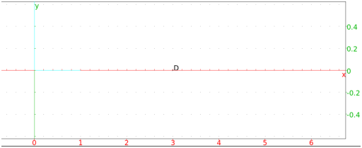
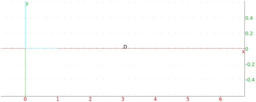

13.17.3 Harmonic division: harmonic_division
Four collinear points A,B,C and D are in harmonic division if
CA/CB = DA/DB . In this
case, D is called the harmonic conjugate of A, B and C.
Four concurrent lines or four parallel lines are in harmonic division
if the intersection of any fifth line with these four lines consists
of four points in harmonic division. The lines are also said to form
a harmonic pencil. The fourth line is called the harmonic conjugate
of the first three.
The harmonic_division command finds harmonic conjugates.
-
harmonic_division takes four arguments:
-
P1,P2,P3, three collinear points or three concurrent
lines.
- var, a variable name.
- harmonic_division(P1,P2,P3,var)
returns and draws the three points or lines P1,P2 and P3 with
a fourth so the four objects are in harmonic division, and assigns
the fourth point or line to var.
Examples
-
Input:
harmonic_division(0,2,3/2,D)
Output:

- Input:
harmonic_division(point(0),point(2),point(3/2),D)
Output:

Input:
affix(D)
Output: